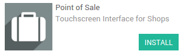
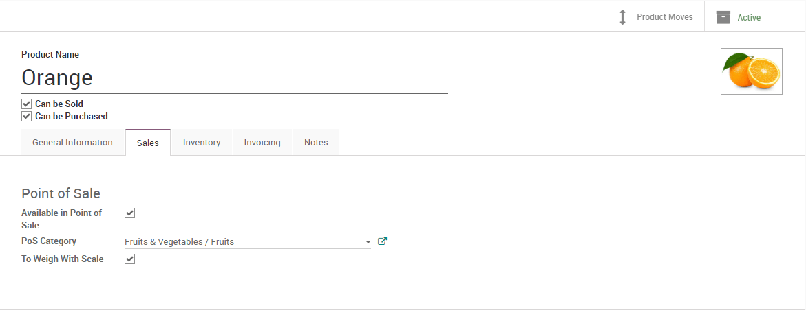
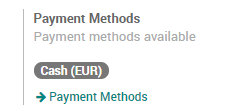
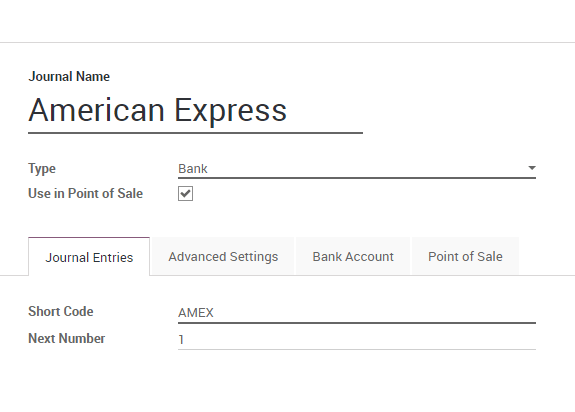
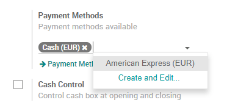
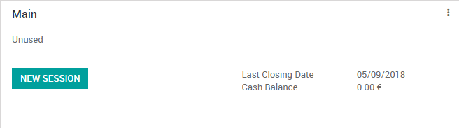
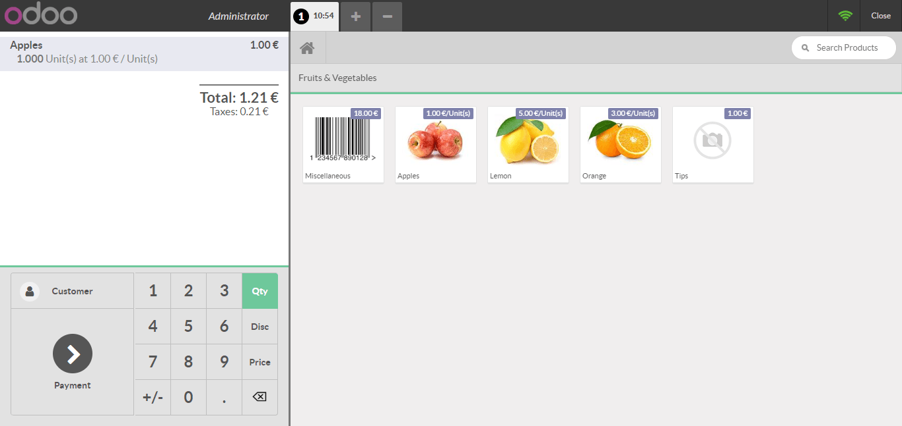
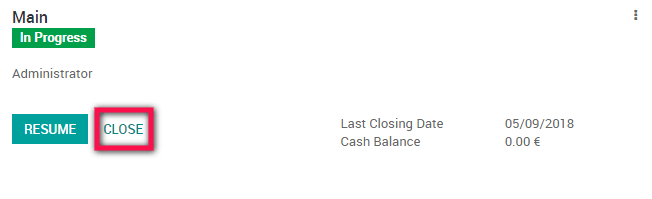
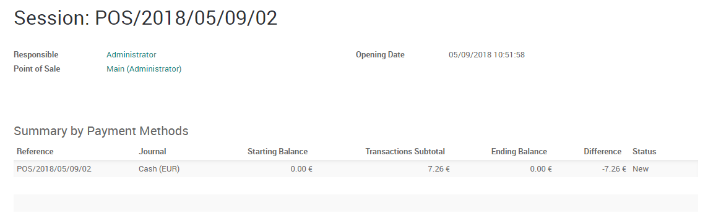

Overview
Odoo's online Point of Sale application is based on a simple, user friendly interface. The Point of Sale application can be used online or offline on iPads, Android tablets or laptops.
Odoo Point of Sale is fully integrated with the Inventory and Accounting applications. Any transaction in your point of sale will be automatically registered in your stock and accounting entries but also in your CRM as the customer can be identified from the app.
You will be able to run real time statistics and consolidations across all your shops without the hassle of integrating several external applications.
Configuration
Install the Point of Sale application
Go to Apps and install the Point of Sale application.
Tip
If you are using Odoo Accounting, do not forget to install a chart of accounts if it's not already done. This can be achieved in the accounting settings.
Make products available in the Point of Sale
To make products available for sale in the Point of Sale, open a product, go in the tab Sales and tick the box "Available in Point of Sale".
Tip
You can also define there if the product has to be weighted with a scale.
Configure your payment methods
To add a new payment method for a Point of Sale, go to and click on the link "Payment Methods".
Now, you can create new payment methods. Do not forget to tick the box "Use in Point of Sale".
Once your payment methods are created, you can decide in which Point of Sale you want to make them available in the Point of Sale configuration.
Configure your Point of Sale
Go to and select the Point of Sale you want to configure. From this menu, you can edit all the settings of your Point of Sale.
Create your first PoS session
Your first order
You are now ready to make your first sales through the PoS. From the PoS dashboard, you see all your points of sale and you can start a new session.
You now arrive on the PoS interface.
Once an order is completed, you can register the payment. All the available payment methods appear on the left of the screen. Select the payment method and enter the received amount. You can then validate the payment.
You can register the next orders.
Close the PoS session
At the end of the day, you will close your PoS session. For this, click on the close button that appears on the top right corner and confirm. You can now close the session from the dashboard.
Tip
It's strongly advised to close your PoS session at the end of each day.
You will then see a summary of all transactions per payment method.
You can click on a line of that summary to see all the orders that have been paid by this payment method during that PoS session.
If everything is correct, you can validate the PoS session and post the closing entries.
It's done, you have now closed your first PoS session.